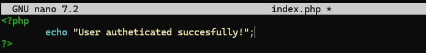

Práctica 6.2 - Despliegue de servidores web con usuarios autenticados mediante LDAP usando Docker y docker-compose
Introducción
Esta práctica se enfoca en desplegar servidores web con autenticación de usuarios mediante LDAP utilizando Docker y docker-compose. Los principales componentes son:
NGINX + demonio de autenticación LDAP + OpenLDAP
Tras conectarnos con ssh a nuestro servidor, creamos la estructura siguiente que es la que vamos a necesitar durante esta práctica
Creamos un html básico con siguiente contenido:
A continuación configuramos nuestro servidor nginx

Hacemos que escuche el puerto 8090, y que redirige cualquier petición al servicio auth-proxy que a su vez la dirige a otro servicio corriendo en http://nginx-ldap:8888 que es el servicio de autenticación LDAP.
Se establecen los encabezados para la autenticación:
proxy_set_headerX-Ldap-URL "ldap://openldap:1389";: Define la URL y puerto del servidor LDAP (openldap:1389).proxy_set_headerX-Ldap-BaseDN "dc=example,dc=org";: Define el Base DN del directorio LDAP.proxy_set_headerX-Ldap-BindDN "cn=admin,dc=example,dc=org";: Define el Bind DN, es decir, la cuenta utilizada para autenticarse en LDAP.proxy_set_headerX-Ldap-BindPass "adminpassword";: Define la contraseña de la cuenta de administración LDAP.
Creamos el archivo docker-compose.yml con el siguiente contenido para ejecutar los tres servicios nginx-ldap nginx y openldap:
- nginx-ldap
- Utiliza la imagen
bitnami/nginx-ldap-auth-daemon-archived, que es un servicio que se encarga de la autenticación LDAP en Nginx. -
Expone el puerto 8888, lo que significa que este servicio estará disponible en http://localhost:8888.
-
nginx
- Usa la imagen
bitnami/nginx, que es una versión de Nginx proporcionada por Bitnami. - Expone el puerto 8090, lo que significa que el servidor Nginx estará accesible en http://localhost:8090.
-
Usa volúmenes para montar archivos locales dentro del contenedor:
./app:/app: Mapea el directorio./appen el host al directorio/appen el contenedor../conf/ldap_nginx.conf:/opt/bitnami/nginx/conf/server_blocks/ldap_nginx.conf: Mapea el archivo de configuraciónldap_nginx.confal directorio de configuración de Nginx dentro del contenedor.
-
openldap
- Usa la imagen
bitnami/openldap, que proporciona un servidor LDAP basado en OpenLDAP. - Expone el puerto 1389, permitiendo el acceso a LDAP en
ldap://localhost:1389. - Usa variables de entorno para configurar el servidor LDAP:
LDAP_ADMIN_USERNAME=admin: Define el usuario administrador (admin).LDAP_ADMIN_PASSWORD=adminpassword: Define la contraseña del administrador.LDAP_USERS=customuser: Crea un usuario adicional llamadocustomuser.LDAP_PASSWORDS=custompassword: Define la contraseña paracustomuser.
Con el archivo docker-compose.yml creado, se levantarán los contenedores y se comprobará que funcionan correctamente.
Si accedemos a la dirección http://ip-servidor:8090 deberá aparecer lo siguiente:

Introdcimos las credenciales de acceso y deberíamos poder acceder a la página principal.

Despliegue con Docker de PHP + Apache con autenticación LDAP
Haciendo uso de la anterior estructura de directorios, se creará un archivo index.php con el siguiente contenido:

En el directorio Docker se creará un archivo Dockerfile con el siguiente contenido:

Se creará un archivo en el directorio Docker llamado ldap-demo.conf con el siguiente contenido:
Se creará a continuacion en el mismo directorio un archivo .htaccess con el siguiente contenido:

- .htaccess: es un archivo de configuración utilizado por servidores web Apache. Este archivo permite modificar la configuración del servidor a nivel de directorio, lo que significa que se puede establecer reglas específicas para un directorio o subdirectorio del sitio web sin necesidad de modificar el archivo de configuración global del servidor.
Tras esto, se ejecutará el siguiente comando para construir la imagen:

Si todo ha ido bien, se ejecutará el siguiente comando para levantar el contenedor:
Ahora Si accedemos a la dirección http://ip-servidor:3000/demo y nos logueamos con las credenciales de acceso admin y Secret123, deberá aparecer la siguiente pantalla: